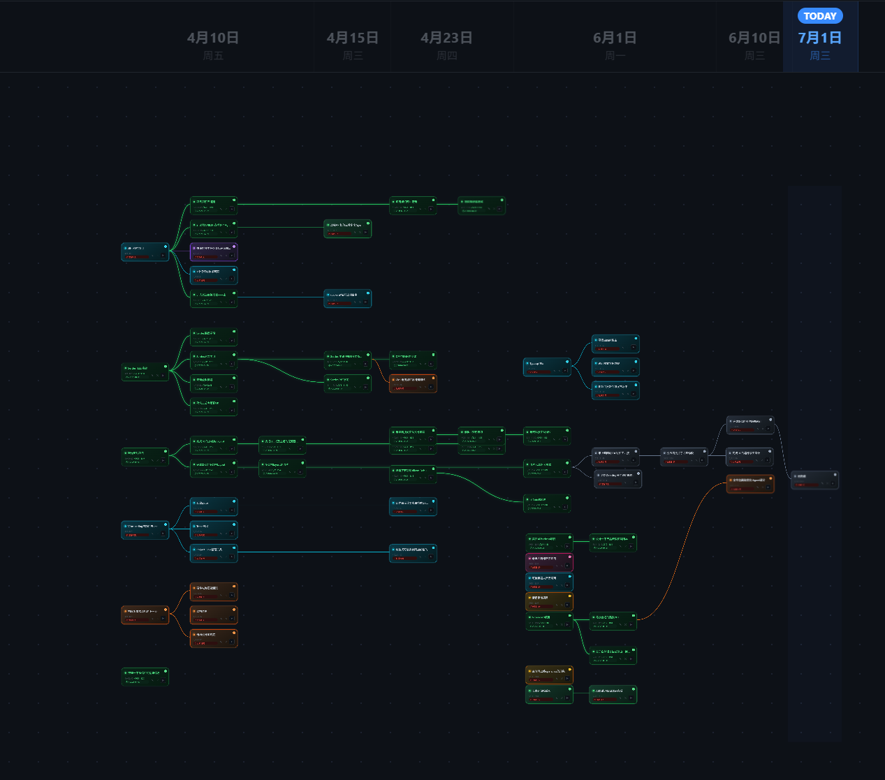

Project Flow 用节点、分支和 Done 标记管理真实项目推进。你可以看到每一步从哪里来、往哪里去，以及今天该收束什么。

少一点表格感，多一点空间感。Project Flow 把项目的推进路径直接放在画布上。
把一个想法放进画布，先确定目标、边界和开始节点。
每次推进都能长出新的分支，保留真实项目里的多条可能路径。
完成后打上 Done 标记，让工作被清楚地结束、复盘和归档。
桌面版适合长期放在本机使用；网页端保留同一套账户、试用和会员体系。注册后可免费试用 30 天，永久会员通过 Creem 和 License Key 解锁。